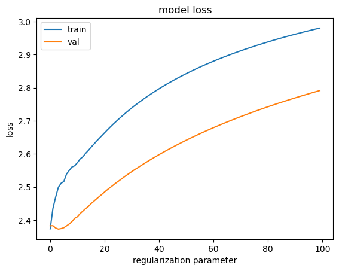

from collections import defaultdict, Counter
import numpy
import torch
from matplotlib import pyplot as plt
import torch.nn.functional as F
from torch.utils.data import random_split
import torch.nn.functional as FBuilding makemore exercise
Imports
g = torch.Generator().manual_seed(2147483647)E01
Train a trigram language model, i.e. take two characters as an input to predict the 3rd one. Feel free to use either counting or a neural net. Evaluate the loss; Did it improve over a bigram model?
Counting
Read in the data
with open('../data/names.txt') as f:
words = list(map(lambda x: x.strip(), f.readlines()))words[:10], len(words)(['emma',
'olivia',
'ava',
'isabella',
'sophia',
'charlotte',
'mia',
'amelia',
'harper',
'evelyn'],
32033)def generate_tripling(words):
for w in words:
chs = ['.'] + list(w) + ['.']
for ch1, ch2, ch3 in zip(chs, chs[1:], chs[2:]):
yield ch1, ch2, ch3alphabets = '.abcdefghijklmnopqrstuvwxyz'
stoi = {char: alphabets.index(char) for char in alphabets}
itos = dict(map(reversed, stoi.items()))for ch1, ch2, ch3 in generate_tripling(words[:3]): print(ch1, ch2, ch3). e m
e m m
m m a
m a .
. o l
o l i
l i v
i v i
v i a
i a .
. a v
a v a
v a .sum(1 for ch1, ch2, ch3 in generate_tripling(words))196113def generate_tripling_counter(words):
tripling_counter = Counter()
for ch1, ch2, ch3 in generate_tripling(words):
tripling_counter[(ch1, ch2, ch3)] += 1
return tripling_countertripling_counter = generate_tripling_counter(words)
tripling_counter.most_common(10)[(('a', 'h', '.'), 1714),
(('n', 'a', '.'), 1673),
(('a', 'n', '.'), 1509),
(('o', 'n', '.'), 1503),
(('.', 'm', 'a'), 1453),
(('.', 'j', 'a'), 1255),
(('.', 'k', 'a'), 1254),
(('e', 'n', '.'), 1217),
(('l', 'y', 'n'), 976),
(('y', 'n', '.'), 953)]len(tripling_counter)6037def create_matrix():
N = torch.zeros((27, 27, 27), dtype=torch.int32)
for ch1, ch2, ch3 in generate_tripling(words):
ix1 = stoi[ch1]
ix2 = stoi[ch2]
ix3 = stoi[ch3]
N[ix1, ix2, ix3] += 1
return NN = create_matrix(); N.shapetorch.Size([27, 27, 27])N[1, 8, 0]tensor(1714, dtype=torch.int32)P = (N+1).float()
P = P/P.sum(-1, keepdims=True)def generate_tripling_prob(words):
for ch1, ch2, ch3 in generate_tripling(words):
ix1 = stoi[ch1]
ix2 = stoi[ch2]
ix3 = stoi[ch3]
prob = P[ix1, ix2, ix3]
yield ch1, ch2, ch3, probfor ch1, ch2, ch3, prob in generate_tripling_prob(words[:3]):
print(ch1, ch2, ch3, prob). e m tensor(0.1855)
e m m tensor(0.1269)
m m a tensor(0.3744)
m a . tensor(0.0669)
. o l tensor(0.2494)
o l i tensor(0.1084)
l i v tensor(0.0219)
i v i tensor(0.2669)
v i a tensor(0.1578)
i a . tensor(0.3657)
. a v tensor(0.0550)
a v a tensor(0.1882)
v a . tensor(0.1405)def generate_names(count, P):
for i in range(count):
out = []
ix1, ix2 = 0, 0
while True:
p = P[ix1, ix2]
ix1 = ix2
ix2 = torch.multinomial(p, num_samples = 1, replacement = True, generator=g).item()
out.append(itos[ix2])
if ix2 == 0:
break
yield ''.join(out)for name in generate_names(5, P): print(name)quia.
yu.
quinslyntien.
nolliahi.
ha.def log_likelihood(words):
sum_log = 0
count = 0
for ch1, ch2, ch3, prob in generate_tripling_prob(words):
sum_log += torch.log(prob)
count += 1
return sum_log/countlen(P)27log_likelihood(words)tensor(-2.0927)negative log likelihood
- log_likelihood(words)tensor(2.0927)NN
def generate_training_set(words):
xs1 = []
xs2 = []
ys = []
for ch1, ch2, ch3 in generate_tripling(words):
ix1 = stoi[ch1]
ix2 = stoi[ch2]
ix3 = stoi[ch3]
xs1.append(ix1)
xs2.append(ix2)
ys.append(ix3)
xs1 = torch.tensor(xs1)
xs2 = torch.tensor(xs2)
xs = torch.vstack((xs1, xs2)).permute(1, 0)
ys = torch.tensor(ys)
return xs, ysSample dataset
xs, ys = generate_training_set(words[:1])xs.shape, ys.shape(torch.Size([4, 2]), torch.Size([4]))xenc = F.one_hot(xs, num_classes=27)xenc.shapetorch.Size([4, 2, 27])xenctensor([[[1, 0, 0, 0, 0, 0, 0, 0, 0, 0, 0, 0, 0, 0, 0, 0, 0, 0, 0, 0, 0, 0, 0,
0, 0, 0, 0],
[0, 0, 0, 0, 0, 1, 0, 0, 0, 0, 0, 0, 0, 0, 0, 0, 0, 0, 0, 0, 0, 0, 0,
0, 0, 0, 0]],
[[0, 0, 0, 0, 0, 1, 0, 0, 0, 0, 0, 0, 0, 0, 0, 0, 0, 0, 0, 0, 0, 0, 0,
0, 0, 0, 0],
[0, 0, 0, 0, 0, 0, 0, 0, 0, 0, 0, 0, 0, 1, 0, 0, 0, 0, 0, 0, 0, 0, 0,
0, 0, 0, 0]],
[[0, 0, 0, 0, 0, 0, 0, 0, 0, 0, 0, 0, 0, 1, 0, 0, 0, 0, 0, 0, 0, 0, 0,
0, 0, 0, 0],
[0, 0, 0, 0, 0, 0, 0, 0, 0, 0, 0, 0, 0, 1, 0, 0, 0, 0, 0, 0, 0, 0, 0,
0, 0, 0, 0]],
[[0, 0, 0, 0, 0, 0, 0, 0, 0, 0, 0, 0, 0, 1, 0, 0, 0, 0, 0, 0, 0, 0, 0,
0, 0, 0, 0],
[0, 1, 0, 0, 0, 0, 0, 0, 0, 0, 0, 0, 0, 0, 0, 0, 0, 0, 0, 0, 0, 0, 0,
0, 0, 0, 0]]])xenc_flattened = xenc.view(4, -1).float()W = torch.randn((27*2, 27), generator=g)
Wtensor([[ 1.7457, 2.1346, -0.8561, ..., -1.3257, 0.1467, 0.1691],
[-1.5397, -0.7276, 1.1491, ..., 0.0793, 0.9019, 1.2028],
[-0.3794, -0.9875, -0.1380, ..., -0.5608, -0.2000, 0.2345],
...,
[-1.1553, 0.0718, 1.3791, ..., 1.7574, -0.8094, 1.5089],
[-1.3766, 0.0908, -0.4618, ..., 1.4289, -0.3785, -1.1138],
[-0.7575, 0.9740, -0.0826, ..., -0.0362, 1.4447, -1.0328]])logits = xenc_flattened @ W # log countscounts = logits.exp()prob = counts/counts.sum(1, keepdims=True)prob.shapetorch.Size([4, 27])ystensor([13, 13, 1, 0])prob[0, 13], prob[1, 13], prob[2, 1], prob[3, 0](tensor(0.0138), tensor(0.0141), tensor(0.0025), tensor(0.0234))-prob[torch.arange(4), ys].log().mean()tensor(4.5763)Train
xs, ys = generate_training_set(words)xs, ys(tensor([[ 0, 5],
[ 5, 13],
[13, 13],
...,
[26, 25],
[25, 26],
[26, 24]]),
tensor([13, 13, 1, ..., 26, 24, 0]))xenc = F.one_hot(xs, num_classes=27)
xenc_flattened = xenc.view(len(xenc), -1).float()xenc_flattened.dtypetorch.float32xenc_flattened.shape, ys.shape(torch.Size([196113, 54]), torch.Size([196113]))def train(X, y, epochs, lr):
num = X.shape[0]
print(num)
W = torch.randn((54, 27), requires_grad=True, generator=g)
for i in range(epochs):
logits = X @ W
counts = logits.exp()
prob = counts/counts.sum(1, keepdims=True)
loss = -prob[torch.arange(num), y].log().mean()
print(f'Epoch {i} Loss {loss}')
W.grad = None
loss.backward()
W.data += -lr * W.grad
return Wxenc_flattened.shape[0]196113model = train(xenc_flattened, ys, 100, 50)196113
Epoch 0 Loss 4.304508209228516
Epoch 1 Loss 3.5239951610565186
Epoch 2 Loss 3.1618173122406006
Epoch 3 Loss 2.9341208934783936
Epoch 4 Loss 2.788262128829956
Epoch 5 Loss 2.6947758197784424
Epoch 6 Loss 2.6315062046051025
Epoch 7 Loss 2.5849287509918213
Epoch 8 Loss 2.5485451221466064
Epoch 9 Loss 2.519071578979492
Epoch 10 Loss 2.4946088790893555
Epoch 11 Loss 2.4739458560943604
Epoch 12 Loss 2.4562535285949707
Epoch 13 Loss 2.440938949584961
Epoch 14 Loss 2.427560329437256
Epoch 15 Loss 2.415781021118164
Epoch 16 Loss 2.4053385257720947
Epoch 17 Loss 2.396023988723755
Epoch 18 Loss 2.3876688480377197
Epoch 19 Loss 2.380136728286743
Epoch 20 Loss 2.3733139038085938
Epoch 21 Loss 2.3671069145202637
Epoch 22 Loss 2.3614373207092285
Epoch 23 Loss 2.356238842010498
Epoch 24 Loss 2.3514552116394043
Epoch 25 Loss 2.347038984298706
Epoch 26 Loss 2.3429486751556396
Epoch 27 Loss 2.339149236679077
Epoch 28 Loss 2.3356103897094727
Epoch 29 Loss 2.3323051929473877
Epoch 30 Loss 2.3292105197906494
Epoch 31 Loss 2.3263063430786133
Epoch 32 Loss 2.3235747814178467
Epoch 33 Loss 2.321000576019287
Epoch 34 Loss 2.3185694217681885
Epoch 35 Loss 2.3162693977355957
Epoch 36 Loss 2.3140900135040283
Epoch 37 Loss 2.3120217323303223
Epoch 38 Loss 2.3100552558898926
Epoch 39 Loss 2.3081839084625244
Epoch 40 Loss 2.3064005374908447
Epoch 41 Loss 2.3046987056732178
Epoch 42 Loss 2.303072929382324
Epoch 43 Loss 2.301518201828003
Epoch 44 Loss 2.30003023147583
Epoch 45 Loss 2.2986040115356445
Epoch 46 Loss 2.297236442565918
Epoch 47 Loss 2.2959237098693848
Epoch 48 Loss 2.2946624755859375
Epoch 49 Loss 2.293450355529785
Epoch 50 Loss 2.292283773422241
Epoch 51 Loss 2.2911601066589355
Epoch 52 Loss 2.2900779247283936
Epoch 53 Loss 2.289034605026245
Epoch 54 Loss 2.2880282402038574
Epoch 55 Loss 2.2870562076568604
Epoch 56 Loss 2.2861175537109375
Epoch 57 Loss 2.285210371017456
Epoch 58 Loss 2.2843332290649414
Epoch 59 Loss 2.28348445892334
Epoch 60 Loss 2.282663106918335
Epoch 61 Loss 2.281867504119873
Epoch 62 Loss 2.2810964584350586
Epoch 63 Loss 2.2803494930267334
Epoch 64 Loss 2.2796247005462646
Epoch 65 Loss 2.278921365737915
Epoch 66 Loss 2.2782392501831055
Epoch 67 Loss 2.2775766849517822
Epoch 68 Loss 2.276932954788208
Epoch 69 Loss 2.2763075828552246
Epoch 70 Loss 2.2756996154785156
Epoch 71 Loss 2.2751083374023438
Epoch 72 Loss 2.2745330333709717
Epoch 73 Loss 2.2739734649658203
Epoch 74 Loss 2.273428440093994
Epoch 75 Loss 2.272897958755493
Epoch 76 Loss 2.27238130569458
Epoch 77 Loss 2.2718777656555176
Epoch 78 Loss 2.2713873386383057
Epoch 79 Loss 2.2709085941314697
Epoch 80 Loss 2.270442247390747
Epoch 81 Loss 2.269987106323242
Epoch 82 Loss 2.269543170928955
Epoch 83 Loss 2.2691097259521484
Epoch 84 Loss 2.268686532974243
Epoch 85 Loss 2.2682735919952393
Epoch 86 Loss 2.2678701877593994
Epoch 87 Loss 2.2674758434295654
Epoch 88 Loss 2.2670907974243164
Epoch 89 Loss 2.266714334487915
Epoch 90 Loss 2.2663462162017822
Epoch 91 Loss 2.265986204147339
Epoch 92 Loss 2.265634298324585
Epoch 93 Loss 2.2652900218963623
Epoch 94 Loss 2.2649528980255127
Epoch 95 Loss 2.2646231651306152
Epoch 96 Loss 2.2643001079559326
Epoch 97 Loss 2.263984203338623
Epoch 98 Loss 2.263674736022949
Epoch 99 Loss 2.263371467590332Here the loss is less, it is an improve over bigram model
xenc = F.one_hot(torch.tensor([0, 0]), num_classes=27).float()xenc.shapetorch.Size([2, 27])Prediction
def generate_words():
for i in range(5):
out = []
ix1, ix2 = 0, 0
while True:
xenc = F.one_hot(torch.tensor([ix1, ix2]), num_classes=27).float()
xenc_flattened = xenc.view(1, -1)
logits = xenc_flattened @ model # predict log-counts
counts = logits.exp()
p = counts/counts.sum(1, keepdims=True)
ix1 = ix2
ix2 = torch.multinomial(p, num_samples=1, replacement=True).item()
out.append(itos[ix2])
if ix2 == 0:
break
print(''.join(out))generate_words()yanel.
ori.
yrmynna.
alanan.
ssonncasmi.E02
split up the dataset randomly into 80% train set, 10% dev set, 10% test set. Train the bigram and trigram models only on the training set. Evaluate them on dev and test splits. What can you see?
xenc_num = xenc_flattened.shape[0]range(xenc_num)range(0, 196113)test_subset, valid_subset, train_subset = random_split(range(xenc_num), [0.1, 0.1, 0.8],
generator=g)train_idx = torch.tensor(train_subset)
valid_idx = torch.tensor(valid_subset)
test_idx = torch.tensor(test_subset)train_idx.shape, valid_idx.shape, test_idx.shape(torch.Size([156890]), torch.Size([19611]), torch.Size([19612]))x_train, y_train = xenc_flattened[train_idx], ys[train_idx]
x_valid, y_valid = xenc_flattened[valid_idx], ys[valid_idx]
x_test, y_test = xenc_flattened[test_idx], ys[test_idx]model_trigram = train(x_train, y_train, 100, 10)156890
Epoch 0 Loss 4.504120826721191
Epoch 1 Loss 4.2687578201293945
Epoch 2 Loss 4.06620454788208
Epoch 3 Loss 3.8899307250976562
Epoch 4 Loss 3.7362024784088135
Epoch 5 Loss 3.6019790172576904
Epoch 6 Loss 3.4846436977386475
Epoch 7 Loss 3.382246255874634
Epoch 8 Loss 3.293360471725464
Epoch 9 Loss 3.2166662216186523
Epoch 10 Loss 3.1506481170654297
Epoch 11 Loss 3.0936076641082764
Epoch 12 Loss 3.0438811779022217
Epoch 13 Loss 3.0000367164611816
Epoch 14 Loss 2.9609479904174805
Epoch 15 Loss 2.925764560699463
Epoch 16 Loss 2.8938498497009277
Epoch 17 Loss 2.864720106124878
Epoch 18 Loss 2.838001251220703
Epoch 19 Loss 2.813394069671631
Epoch 20 Loss 2.790656566619873
Epoch 21 Loss 2.7695863246917725
Epoch 22 Loss 2.7500126361846924
Epoch 23 Loss 2.73178768157959
Epoch 24 Loss 2.7147839069366455
Epoch 25 Loss 2.698887348175049
Epoch 26 Loss 2.6839985847473145
Epoch 27 Loss 2.6700284481048584
Epoch 28 Loss 2.6568961143493652
Epoch 29 Loss 2.6445319652557373
Epoch 30 Loss 2.6328697204589844
Epoch 31 Loss 2.6218528747558594
Epoch 32 Loss 2.611428737640381
Epoch 33 Loss 2.601550579071045
Epoch 34 Loss 2.5921757221221924
Epoch 35 Loss 2.583266258239746
Epoch 36 Loss 2.5747880935668945
Epoch 37 Loss 2.56670880317688
Epoch 38 Loss 2.559000253677368
Epoch 39 Loss 2.5516374111175537
Epoch 40 Loss 2.5445964336395264
Epoch 41 Loss 2.537855625152588
Epoch 42 Loss 2.5313961505889893
Epoch 43 Loss 2.5251998901367188
Epoch 44 Loss 2.5192503929138184
Epoch 45 Loss 2.513532876968384
Epoch 46 Loss 2.508033514022827
Epoch 47 Loss 2.502739906311035
Epoch 48 Loss 2.4976401329040527
Epoch 49 Loss 2.4927237033843994
Epoch 50 Loss 2.487980604171753
Epoch 51 Loss 2.4834015369415283
Epoch 52 Loss 2.478977680206299
Epoch 53 Loss 2.4747016429901123
Epoch 54 Loss 2.4705657958984375
Epoch 55 Loss 2.4665629863739014
Epoch 56 Loss 2.4626872539520264
Epoch 57 Loss 2.4589321613311768
Epoch 58 Loss 2.455292224884033
Epoch 59 Loss 2.4517619609832764
Epoch 60 Loss 2.4483370780944824
Epoch 61 Loss 2.445012331008911
Epoch 62 Loss 2.4417836666107178
Epoch 63 Loss 2.4386465549468994
Epoch 64 Loss 2.4355976581573486
Epoch 65 Loss 2.4326331615448
Epoch 66 Loss 2.4297492504119873
Epoch 67 Loss 2.426943302154541
Epoch 68 Loss 2.4242119789123535
Epoch 69 Loss 2.4215521812438965
Epoch 70 Loss 2.418961524963379
Epoch 71 Loss 2.4164371490478516
Epoch 72 Loss 2.4139764308929443
Epoch 73 Loss 2.411576986312866
Epoch 74 Loss 2.4092373847961426
Epoch 75 Loss 2.4069550037384033
Epoch 76 Loss 2.4047274589538574
Epoch 77 Loss 2.402553081512451
Epoch 78 Loss 2.400430202484131
Epoch 79 Loss 2.3983571529388428
Epoch 80 Loss 2.396331787109375
Epoch 81 Loss 2.394352912902832
Epoch 82 Loss 2.392418622970581
Epoch 83 Loss 2.3905277252197266
Epoch 84 Loss 2.388679265975952
Epoch 85 Loss 2.386870861053467
Epoch 86 Loss 2.3851022720336914
Epoch 87 Loss 2.383371353149414
Epoch 88 Loss 2.3816778659820557
Epoch 89 Loss 2.380019426345825
Epoch 90 Loss 2.378396511077881
Epoch 91 Loss 2.3768067359924316
Epoch 92 Loss 2.3752498626708984
Epoch 93 Loss 2.3737244606018066
Epoch 94 Loss 2.372229814529419
Epoch 95 Loss 2.370765447616577
Epoch 96 Loss 2.3693296909332275
Epoch 97 Loss 2.367922306060791
Epoch 98 Loss 2.366542339324951
Epoch 99 Loss 2.3651890754699707Loss on the dev set
def evaluate_loss(model, x, y):
logits = x @ model
counts = logits.exp()
pred = counts/counts.sum(1, keepdims=True)
return - pred[torch.arange(x.shape[0]), y].log().mean().item()evaluate_loss(model_trigram, x_valid, y_valid)2.3728110790252686Loss on the test set
evaluate_loss(model_trigram, x_test, y_test)2.3934383392333984The loss on test and validation dataset are about the same for the trigram model on the training set.
Same we can for the bigram model that I have computed in nbs/lecture_notes/02_building_makemore.ipynb. The validation and test dataset have about the same losses to the training set.
The trigram is better than bigram
E03
Use the dev set to tune the strength of smoothing (or regularization) for the trigram model - i.e. try many possibilities and see which one works best based on the dev set loss. What patterns can you see in the train and dev set loss as you tune this strength? Take the best setting of the smoothing and evaluate on the test set once and at the end. How good of a loss do you achieve?
def train(X, y, epochs, lr, regularization_param, print_at_every_epoch = False, print_at_last=False):
num = X.shape[0]
W = torch.randn((54, 27), requires_grad=True, generator=g)
for i in range(epochs):
logits = X @ W
counts = logits.exp()
prob = counts/counts.sum(1, keepdims=True)
loss = -prob[torch.arange(num), y].log().mean()
# regularization
regularization_loss = regularization_param * (W **2).mean()
loss += regularization_loss
if print_at_every_epoch: print(f'Epoch {i} Loss {loss}')
W.grad = None
loss.backward()
W.data += -lr * W.grad
if print_at_last: print(f'Loss {loss}')
return W, loss.item()def get_reg_param_trend():
train_losses = []
val_losses = []
reg_params = []
for reg_param in torch.linspace(0, 10, 100):
model, train_loss = train(x_train, y_train, 100, 10, reg_param)
val_loss = evaluate_loss(model, x_valid, y_valid)
train_losses.append(train_loss)
val_losses.append(val_loss)
reg_params.append(reg_param)
return train_losses, val_losses, reg_paramstrain_losses, val_losses, reg_params = get_reg_param_trend()plt.plot(train_losses)
plt.plot(val_losses)
plt.title('model loss')
plt.ylabel('loss')
plt.xlabel('regularization parameter')
plt.legend(['train', 'val'], loc='upper left')
plt.show()
As we increase the regularization strength, we see that both the losses are increasing and the training loss is increasing over validation loss, it means that the model is underfitting. Lets choose the regularization parameter as 0 and evaluate the test set
model, train_loss = train(x_train, y_train, 100, 10, 0)train_loss2.3800032138824463evaluate_loss(model, x_valid, y_valid)2.3897788524627686evaluate_loss(model, x_test, y_test)2.407710075378418E04
We saw that our 1-hot vectors merely select a row of W, so producing these vectors explicitly feels wasteful. Can you delete our use of F.one_hot in favor of simply indexing into rows of W?
xs.shapetorch.Size([196113, 2])xenc_num196113x_train, y_train = xs[train_idx], ys[train_idx]
x_valid, y_valid = xs[valid_idx], ys[valid_idx]
x_test, y_test = xs[test_idx], ys[test_idx]def train(X, y, epochs, lr, regularization_param, print_at_every_epoch = False, print_at_last=False):
assert X.shape[-1] == 2
num = X.shape[0]
W = torch.randn((54, 27), requires_grad=True, generator=g)
for i in range(epochs):
#indexing
W1 = W[:27]
W2 = W[27:]
logits = W1[X[:, 0]] + W2[X[:, 1]]
counts = logits.exp()
prob = counts/counts.sum(1, keepdims=True)
loss = -prob[torch.arange(num), y].log().mean()
# regularization
regularization_loss = regularization_param * (W **2).mean()
loss += regularization_loss
if print_at_every_epoch: print(f'Epoch {i} Loss {loss}')
W.grad = None
loss.backward()
W.data += -lr * W.grad
if print_at_last: print(f'Loss {loss}')
return W, lossmodel, train_loss = train(x_train, y_train, 100, 10, 0)train_losstensor(2.3760, grad_fn=<AddBackward0>)def evaluate_loss(model, x, y):
W1 = model[:27]
W2 = model[27:]
logits = W1[x[:, 0]] + W2[x[:, 1]]
counts = logits.exp()
prob = counts/counts.sum(1, keepdims=True)
return -prob[torch.arange(x.shape[0]), y].log().mean()evaluate_loss(model, x_valid, y_valid)tensor(2.3836, grad_fn=<NegBackward0>)evaluate_loss(model, x_test, y_test)tensor(2.4045, grad_fn=<NegBackward0>)E05
Look up and use F.cross_entropy instead. You should achieve the same result. Can you think of why we’d prefer to use F.cross_entropy instead?
x_train, y_train = xenc_flattened[train_idx], ys[train_idx]
x_valid, y_valid = xenc_flattened[valid_idx], ys[valid_idx]
x_test, y_test = xenc_flattened[test_idx], ys[test_idx]def train(X, y, epochs, lr, print_at_every_epoch = False, print_at_last=False):
num = X.shape[0]
W = torch.randn((54, 27), requires_grad=True, generator=g)
for i in range(epochs):
logits = X @ W
loss = F.cross_entropy(logits, y)
if print_at_every_epoch: print(f'Epoch {i} Loss {loss}')
W.grad = None
loss.backward()
W.data += -lr * W.grad
if print_at_last: print(f'Loss {loss}')
return W, lossdef evaluate_loss(model, x, y):
logits = x @ model
counts = logits.exp()
pred = counts/counts.sum(1, keepdims=True)
return - pred[torch.arange(x.shape[0]), y].log().mean().item()model, loss = train(x_train, y_train, 100, 10, 0)losstensor(2.3776, grad_fn=<NllLossBackward0>)evaluate_loss(model, x_valid, y_valid)2.387678861618042evaluate_loss(model, x_test, y_test)2.4051289558410645Using F.cross_entropy, we dont have to compute the counts and probabilities ourselves instead we just have to pass the logits and labels to the function, also we can pass the weight given to each class and label smoothing
E06
meta-exercise! Think of a fun/interesting exercise and complete it.
Lets introduce bias, activation function and another layer of weight in the neural network
relu = torch.nn.ReLU() # activationdef train(X, y, epochs, lr, print_at_every_epoch = False, print_at_last=False):
num = X.shape[0]
W1 = torch.randn((54, 50), requires_grad=True, generator=g)
W2 = torch.randn((50, 27), requires_grad=True, generator=g)
b = torch.zeros(50, requires_grad=True)
for i in range(epochs):
#first layer
output = relu(X @ W1 + b)
# second layer
logits = output @ W2
loss = F.cross_entropy(logits, y)
if print_at_every_epoch: print(f'Epoch {i} Loss {loss}')
W1.grad = None
W2.grad = None
b.grad = None
loss.backward()
W1.data += -lr * W1.grad
W2.data += -lr * W2.grad
b.data += -lr * b.grad
if print_at_last: print(f'Loss {loss}')
return W1, W2, b, lossparams1, params2, bias, loss = train(x_train, y_train, 100, 5, print_at_every_epoch = True, print_at_last = True)Epoch 0 Loss 14.541219711303711
Epoch 1 Loss 6.2091875076293945
Epoch 2 Loss 4.395009994506836
Epoch 3 Loss 3.53914475440979
Epoch 4 Loss 3.2722010612487793
Epoch 5 Loss 3.154813766479492
Epoch 6 Loss 3.0808494091033936
Epoch 7 Loss 3.0231924057006836
Epoch 8 Loss 2.9723856449127197
Epoch 9 Loss 2.929724931716919
Epoch 10 Loss 2.8861398696899414
Epoch 11 Loss 2.8448402881622314
Epoch 12 Loss 2.8097846508026123
Epoch 13 Loss 2.7789549827575684
Epoch 14 Loss 2.7526140213012695
Epoch 15 Loss 2.7295141220092773
Epoch 16 Loss 2.709247350692749
Epoch 17 Loss 2.691128730773926
Epoch 18 Loss 2.6747939586639404
Epoch 19 Loss 2.6597096920013428
Epoch 20 Loss 2.6458194255828857
Epoch 21 Loss 2.6330149173736572
Epoch 22 Loss 2.621168851852417
Epoch 23 Loss 2.6100637912750244
Epoch 24 Loss 2.5997819900512695
Epoch 25 Loss 2.589761972427368
Epoch 26 Loss 2.5802347660064697
Epoch 27 Loss 2.5712060928344727
Epoch 28 Loss 2.5626959800720215
Epoch 29 Loss 2.553861379623413
Epoch 30 Loss 2.545748710632324
Epoch 31 Loss 2.5381507873535156
Epoch 32 Loss 2.53104567527771
Epoch 33 Loss 2.5244433879852295
Epoch 34 Loss 2.5182859897613525
Epoch 35 Loss 2.5125017166137695
Epoch 36 Loss 2.506807804107666
Epoch 37 Loss 2.501720428466797
Epoch 38 Loss 2.4966917037963867
Epoch 39 Loss 2.492325782775879
Epoch 40 Loss 2.4879019260406494
Epoch 41 Loss 2.484579086303711
Epoch 42 Loss 2.480976104736328
Epoch 43 Loss 2.4792466163635254
Epoch 44 Loss 2.475902795791626
Epoch 45 Loss 2.4750518798828125
Epoch 46 Loss 2.4703636169433594
Epoch 47 Loss 2.470320463180542
Epoch 48 Loss 2.4647164344787598
Epoch 49 Loss 2.4643948078155518
Epoch 50 Loss 2.458014965057373
Epoch 51 Loss 2.457747459411621
Epoch 52 Loss 2.4513306617736816
Epoch 53 Loss 2.4503233432769775
Epoch 54 Loss 2.444188117980957
Epoch 55 Loss 2.442826271057129
Epoch 56 Loss 2.4379799365997314
Epoch 57 Loss 2.436905860900879
Epoch 58 Loss 2.4321563243865967
Epoch 59 Loss 2.4304089546203613
Epoch 60 Loss 2.4265809059143066
Epoch 61 Loss 2.424839973449707
Epoch 62 Loss 2.421621322631836
Epoch 63 Loss 2.4200439453125
Epoch 64 Loss 2.4169461727142334
Epoch 65 Loss 2.415520429611206
Epoch 66 Loss 2.412719488143921
Epoch 67 Loss 2.4114415645599365
Epoch 68 Loss 2.408984899520874
Epoch 69 Loss 2.4082932472229004
Epoch 70 Loss 2.405961275100708
Epoch 71 Loss 2.4053380489349365
Epoch 72 Loss 2.403006076812744
Epoch 73 Loss 2.402623176574707
Epoch 74 Loss 2.400026559829712
Epoch 75 Loss 2.399906873703003
Epoch 76 Loss 2.3976261615753174
Epoch 77 Loss 2.3984215259552
Epoch 78 Loss 2.395678997039795
Epoch 79 Loss 2.396718740463257
Epoch 80 Loss 2.394043445587158
Epoch 81 Loss 2.395671844482422
Epoch 82 Loss 2.3921918869018555
Epoch 83 Loss 2.392773389816284
Epoch 84 Loss 2.3891818523406982
Epoch 85 Loss 2.3900513648986816
Epoch 86 Loss 2.3863515853881836
Epoch 87 Loss 2.3863282203674316
Epoch 88 Loss 2.3832342624664307
Epoch 89 Loss 2.3832027912139893
Epoch 90 Loss 2.3800551891326904
Epoch 91 Loss 2.380153179168701
Epoch 92 Loss 2.377634048461914
Epoch 93 Loss 2.3776769638061523
Epoch 94 Loss 2.375394821166992
Epoch 95 Loss 2.375596046447754
Epoch 96 Loss 2.373054265975952
Epoch 97 Loss 2.3736236095428467
Epoch 98 Loss 2.3708877563476562
Epoch 99 Loss 2.3716115951538086
Loss 2.3716115951538086def evaluate_loss(X, y, W1, W2, b):
#first layer
output = relu(X @ W1 + b)
# second layer
logits = output @ W2
loss = F.cross_entropy(logits, y)
return lossevaluate_loss(x_valid, y_valid, params1, params2, bias)tensor(2.3825, grad_fn=<NllLossBackward0>)evaluate_loss(x_test, y_test, params1, params2, bias)tensor(2.3918, grad_fn=<NllLossBackward0>)